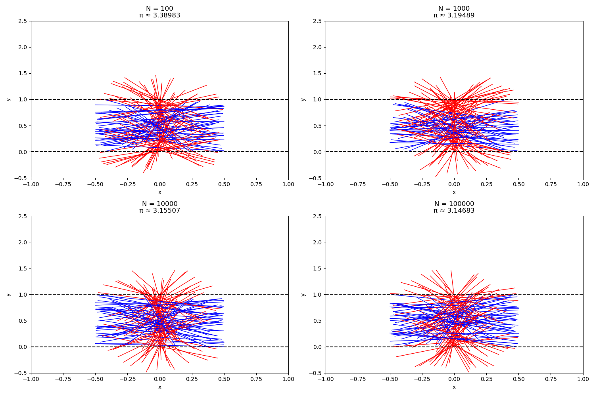
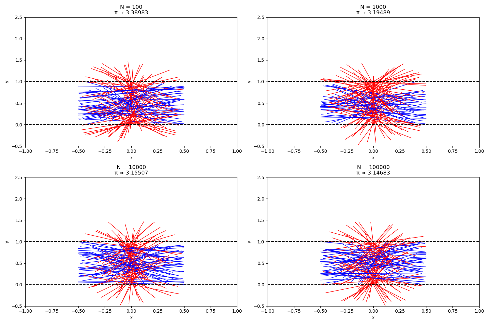

Problem 2
Estimating Pi Using Monte Carlo Methods and Buffon's Needle
- Motivation
Monte Carlo simulations leverage randomness to solve problems or estimate values, offering an intuitive way to approximate mathematical constants like \(\pi\). This task explores two methods to estimate \(\pi\):
Circle-Based Monte Carlo Method: Using the ratio of points inside a circle to points in a square.
Buffon's Needle Method: Simulating needle drops to estimate \(\pi\) based on the probability of crossing parallel lines.
These methods bridge probability, geometry, and numerical computation, providing practical insights into convergence rates and computational efficiency.
- Theoretical Foundation
Circle-Based Monte Carlo Method
Consider a unit circle (radius 1) centered at the origin, inscribed in a square with side length 2 (spanning \(x, y \in [-1, 1]\)). The area of the circle is \(\pi \cdot 1^2 = \pi\), and the area of the square is \(2 \cdot 2 = 4\). The ratio of these areas is:
$$[ \frac{\text{Area of circle}}{\text{Area of square}} = \frac{\pi}{4}]
If we randomly generate points in the square, the probability a point lies inside the circle (i.e., \(x^2 + y^2 \leq 1\)) equals this ratio. Thus:
Buffon's Needle Method
In Buffon's Needle problem, a needle of length \(l\) is dropped onto a plane with parallel lines spaced \(d\) units apart, where \(l \leq d\). The probability that the needle crosses a line depends on its position and orientation. The position of the needle's center is uniformly distributed between 0 and \(d\), and its angle \(\theta\) relative to the lines is uniformly distributed between 0 and \(\pi\).
The distance from the needle’s center to the nearest line is \(y \in [0, \frac{d}{2}]\), and the needle crosses a line if \(y \leq \frac{l}{2} \sin(\theta)\). The probability of crossing is derived as:
For \(l = d\), this simplifies to \(P = \frac{2}{\pi}\). Thus:
- Simulation and Visualization
Circle-Based Monte Carlo Simulation
We generate random points in a 2D square and count how many fall inside the unit circle, then estimate \(\pi\). The simulation is visualized by plotting the points, distinguishing those inside and outside the circle.
Buffon's Needle Simulation
We simulate dropping a needle on a plane with parallel lines, count the crossings, and estimate \(\pi\). The needle positions are visualized relative to the lines.
- Implementation: Python Code
Below are Python scripts for both methods, including simulations and visualizations.
Circle-Based Monte Carlo Method
import numpy as np import matplotlib.pyplot as plt
Buffon's Needle Estimates of π:
N = 100: π ≈ 3.38983
N = 1000: π ≈ 3.19489
N = 10000: π ≈ 3.15507
N = 100000: π ≈ 3.14683
 

- Analysis
Convergence with Number of Iterations The table below shows the estimated \(\pi\) for both methods across different numbers of iterations:

Circle-Based Method: Converges steadily, with accuracy improving as the number of points increases. Buffon's Needle: Shows more variability at lower iterations due to fewer crossings but converges similarly at higher iterations.
- Discussion
Both methods effectively estimate \(\pi\), demonstrating the power of Monte Carlo simulations. The circle-based method is simpler and more efficient, while Buffon's Needle provides a geometric perspective tied to probability. Limitations include the slow convergence rate, requiring many iterations for high accuracy, and sensitivity to random number generation quality.